International House entrance: left to middle

[ 2.23628 -0.0458116 -1407.8 ] [ 0.473409 1.85922 -493.477 ] [ 0.000974512 -9.75249e-05 1 ]
16 pairs
RMS residual: 2.698 px
Largest residual: 6.609 px
Recovering perspective, straightening familiar objects and joining overlapping photographs.
I use manually selected point correspondences to estimate projective transformations. The same inverse-warping code supports two interpolation methods and a shared canvas for blending. The report contains two rectification examples, three manual mosaics and three automatic mosaics.
Click any figure to open its full-resolution image. All image coordinates are in pixels, with x increasing to the right and y increasing downward. Rectification, entrance and courtyard use the supplied resolution. The wider stadium set is reduced from 1280 x 960 to 1000 x 750 with the same custom bilinear sampler to keep its output canvas within the memory limit.
Each scene contains a left, middle and right view. The middle photograph defines the reference coordinates for its mosaic. The shared windows, door frames, railings and other fixed details provide corresponding points. I avoid using people as landmarks.
A homography is exact for a planar surface or for a camera rotating about a fixed centre of projection. These scenes contain several depths, so a good fit on the architecture does not guarantee perfect alignment of nearby objects. This becomes visible in the final overlaps.


The function computeH(im1_pts, im2_pts) maps source points (x, y) to reference points (u, v). I fix the last homography entry to 1 and solve for the other eight parameters. Every correspondence supplies two equations:
Moving the denominator terms to the left gives the following two rows of A h = b:
[ x y 1 0 0 0 -ux -uy ] h = u [ 0 0 0 x y 1 -vx -vy ] h = v h = [h11 h12 h13 h21 h22 h23 h31 h32]T
With n pairs, A has 2n rows and 8 columns. All six mosaic fits use more than four pairs and solve the overdetermined system with numpy.linalg.lstsq. Before solving, I centre each point set and scale its RMS distance to √2. I then undo the two coordinate normalizations and scale H so that its bottom-right entry is 1. This improves numerical conditioning without changing the projective model.
The figures below show the exact pairs used in each fit. Matching labels identify the same selected landmark. The matrices map working source pixels to the middle photograph, before adding the mosaic canvas offset. Entrance and courtyard coordinates use 1280 x 960 images; stadium coordinates use 1000 x 750 images. Original-resolution manual points are rescaled consistently before fitting. Reprojection RMS is a fit residual on these selected points, not an independent accuracy measurement.
[ 2.23628 -0.0458116 -1407.8 ] [ 0.473409 1.85922 -493.477 ] [ 0.000974512 -9.75249e-05 1 ]
16 pairs
RMS residual: 2.698 px
Largest residual: 6.609 px

[ 0.346924 -0.0269845 683.639 ] [ -0.244659 0.797338 117.398 ] [ -0.000487974 -5.29954e-05 1 ]
16 pairs
RMS residual: 2.541 px
Largest residual: 5.160 px

[ 2.40014 -0.0745837 -1371.92 ] [ 0.588649 1.96086 -495.802 ] [ 0.00110577 -2.31559e-05 1 ]
19 pairs
RMS residual: 2.595 px
Largest residual: 4.529 px

[ 0.347414 0.0363587 655.76 ] [ -0.273829 0.834402 78.2912 ] [ -0.00051662 1.01371e-05 1 ]
21 pairs
RMS residual: 1.831 px
Largest residual: 3.009 px

[ 2.71086 -0.182742 -1390.7 ] [ 0.800825 2.32071 -561.866 ] [ 0.00170793 1.68386e-05 1 ]
13 pairs
RMS residual: 2.220 px
Largest residual: 3.171 px

[ 0.407376 0.0345721 475.869 ] [ -0.281303 0.802007 75.3093 ] [ -0.000545209 -9.02929e-05 1 ]
17 pairs
RMS residual: 4.352 px
Largest residual: 6.604 px
For each destination pixel, I apply H-1, divide by the homogeneous coordinate and sample the source. Inverse mapping avoids the holes caused by forward splatting. Pixel (0, 0) is the centre of the first pixel. A separate Boolean mask identifies valid source support, so a black image pixel remains valid.
warpImageNearestNeighbor(im, H) rounds each inverse-mapped coordinate to the nearest source pixel. warpImageBilinear(im, H) computes the fractional offsets and combines four neighbours:
Both samplers, inverse coordinate mapping and homography assembly are implemented directly with NumPy. I do not use a library homography estimator, projective warp or interpolation routine.
I select the visible top-left, top-right, bottom-right and bottom-left corners of each front face. The pouch is approximately 15 cm wide and 20 cm tall; the wallet face is approximately 6 cm wide and 9 cm tall. These measurements determine the target proportions. Both surfaces are only approximately planar: seams, padding and rounded edges cannot all be flattened by one homography.


[ 0.755733 -0.0560925 -179.351 ] [ -0.293183 0.926314 -11.8316 ] [ -0.000578402 0.000286321 1 ]
Destination corners:
(0, 0), (600, 0),
(600, 800), (0, 800).
The selected corners now form an upright 3:4 rectangle. The lettering and horizontal seams are much easier to read from this view. The left edge still curves inward because the pouch is bent; a homography straightens the selected plane but does not undo its physical shape.
The nearest-neighbour result has rougher outlines around the large brown letters and the small white text. Bilinear interpolation makes these edges smoother while retaining the overall colour and layout. The target spans 600 by 800 pixels between corner centres, so including both endpoints produces a 601 by 801 pixel image.


[ 0.958368 -0.043494 -408.976 ] [ -0.400102 1.194 -69.1325 ] [ -0.000536023 9.97643e-05 1 ]
Destination corners:
(0, 0), (600, 0),
(600, 900), (0, 900).
The wallet front is mapped to the measured 2:3 proportions. Its stitched border becomes approximately upright, while the rounded bottom corner and curved fabric remain visible. I selected the front panel rather than the lower folded layer.
The fine diagonal weave makes the interpolation difference clear. Nearest neighbour produces a more irregular, grainy pattern. Bilinear interpolation softens that pattern and gives a more even texture, although some fine detail is lost. The 600 by 900 pixel corner spans give a 601 by 901 pixel output.


| Image | Output size | Nearest, median | Bilinear, median | Bilinear / nearest |
|---|---|---|---|---|
| Yellow pouch | 601 x 801 | 49.56 ms | 118.32 ms | 2.39x |
| Wallet | 601 x 901 | 39.67 ms | 107.63 ms | 2.71x |
Median of three timed calls per method, using the same source, homography and destination grid. Timing excludes image reading, plotting and writing. All timings are local CPU measurements and may vary between runs.
Nearest neighbour was faster in both examples. It reads one source value per output pixel, whereas bilinear interpolation reads and weights four values. In this run, bilinear took about 2.4 times as long for the pouch and 2.7 times as long for the wallet. The smoother lettering and fabric made that additional cost worthwhile for the final mosaics. Neither method recovers detail that was absent from the source photograph.
I keep the middle image in its own coordinates and warp the left and right images into that frame. Transforming all source corners gives the union of their bounds. The canvas starts at the floor of the minimum x and y, and ends at the ceiling of the maxima, so negative reference coordinates are retained.
Each source receives a weight based on its distance to the nearest image edge. The weight is largest in the interior and falls toward the boundary. I use a one-pixel floor so that the exterior edge of a single valid source does not become black. Images and weight maps pass through the same bilinear inverse warp.
Only valid samples contribute. Normalizing by the weight sum makes single-source regions retain their own brightness and gives a gradual transition in overlaps. This softens seams; it does not remove parallax or motion between exposures. Blank regions around the panoramas mark pixels outside the union of the warped image support.

Canvas: 4992 x 2273 pixels. Reference-coordinate origin: (-1602, -521). Pixels covered by at least two sources: 1,148,314.
The doorway, windows and building facade form a continuous view across the three photographs. The left sign and right planting area extend the field of view beyond the middle image.
The foreground stair rails and bicycle show doubled edges, and the seated person changes position between exposures. These details are at different depths from the facade or move between photographs, so one homography cannot align them all. Feathering reduces abrupt boundaries but leaves visible ghosting. The far left and right portions also stretch under the wide planar projection.

Canvas: 4731 x 2317 pixels. Reference-coordinate origin: (-1477, -802). Pixels covered by at least two sources: 1,179,326.
The upper windows, cornice and central doors align reasonably well. The mosaic connects the two side walls and makes the overall courtyard layout visible in one image.
The closed orange umbrella, nearby chairs and some benches retain doubled outlines. People also move between views. The overlap therefore looks less consistent around the furniture than along the upper architecture. The outer walls appear stretched because they are projected onto the middle image's plane.

Canvas: 3854 x 1725 pixels. Reference-coordinate origin: (-1509, -562). Pixels covered by at least two sources: 695,916.
The statue and its plinth join the path on the left to the stadium stairs on the right. I included lower rail landmarks as well as building details so that the fit covers more of the overlap.
Several stair rails and step edges still split into two outlines, especially in the right overlap. This pair has the largest fit residual of the six. The near stairs and distant facade cannot both be fitted exactly by a single homography when the viewpoint shifts. The lamp posts and trees at the outer edges are stretched by the planar projection.
The rectifications made the role of correspondences especially clear: four corners and a measured aspect ratio are enough to define a useful front-facing view. More points helped stabilize the mosaic fits, but point count alone did not solve the harder cases. Their positions and the depths of the objects mattered.
The largest remaining errors are geometric. A small residual on selected window corners can coexist with obvious ghosting on a nearby handrail. Looking at the full overlaps was therefore more informative than judging the result by a single error value. For another capture, I would keep the camera's centre of projection as fixed as possible and avoid moving subjects.
Keeping a separate validity mask also mattered. It preserved real dark pixels and prevented empty canvas regions from darkening the overlap. Bilinear sampling and feather weights gave smoother results, but they could not compensate for inconsistent viewpoints or bent surfaces.
Implementation checks cover known projective transforms, noisy least-squares fits, degenerate point sets, analytical interpolation values, negative canvas coordinates, valid black pixels, blending and the complete output pipeline. The final results were also inspected visually. This section completes the required CS180 Part A work.
Part A used manually selected landmarks. Here I detect and describe corners, match the descriptors and estimate each transformation with RANSAC. The nine source photographs, middle reference images, working resolutions and feather blending are the same as in Part A. The automatic pipeline does not read the manual point coordinates.
This implements the required single-scale, axis-aligned version of the assignment. It does not add the optional multiscale, rotation-invariant or panorama-recognition extensions.
I convert RGB to luminance using 0.299R + 0.587G + 0.114B. Harris detection uses the supplied starter's settings: corner_harris(method='eps', sigma=1), followed by local maxima with a minimum separation of one pixel. Corners within the strict 20-pixel border are removed so every descriptor has a complete window.
Taking only the strongest corners tends to concentrate features in highly textured areas. Adaptive non-maximal suppression instead assigns each candidate a radius to the nearest sufficiently stronger candidate:
I compare every candidate against all eligible stronger corners, without first truncating by score. A corner with no eligible neighbour has infinite radius. I keep the 500 largest radii, using strength and image position to break ties deterministically. This spreads the retained features across the available textured regions.
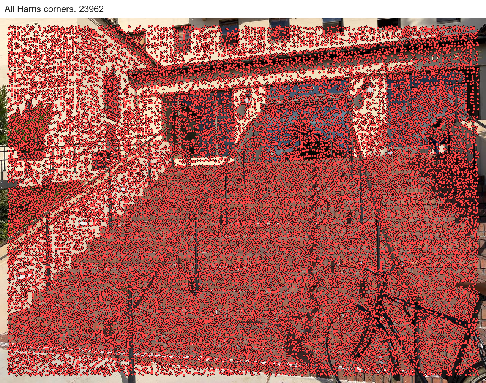
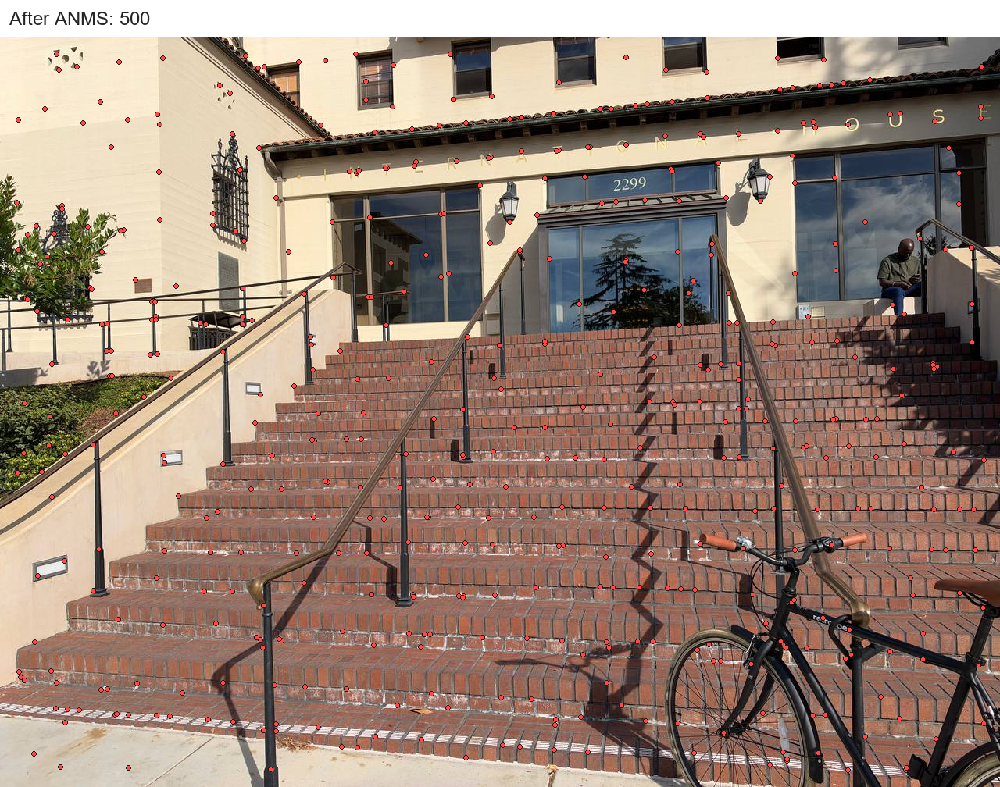
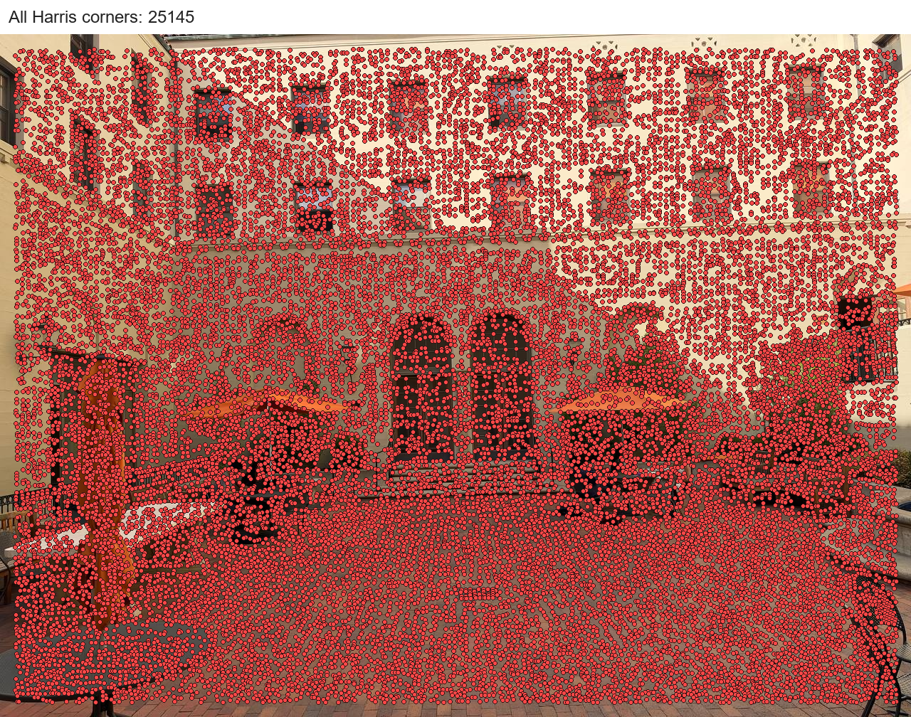
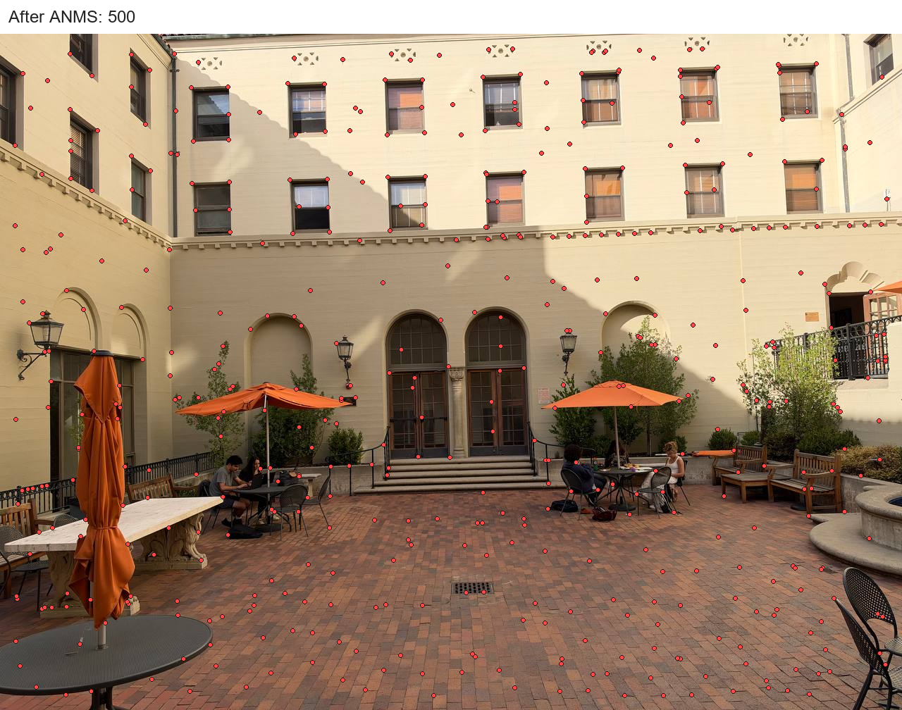
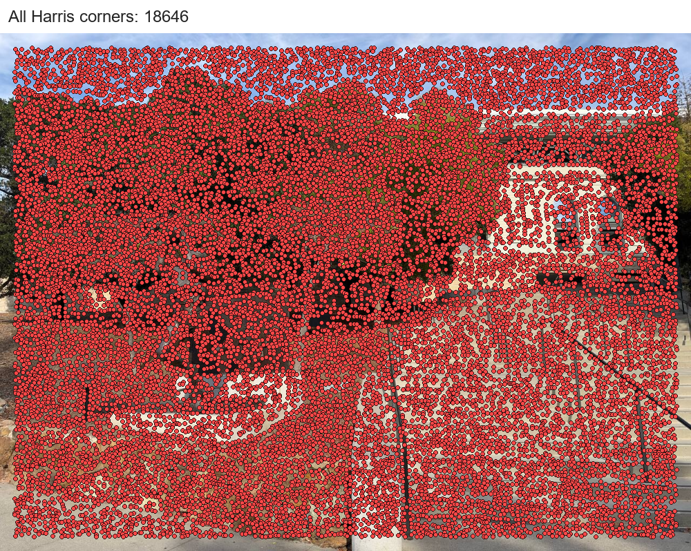
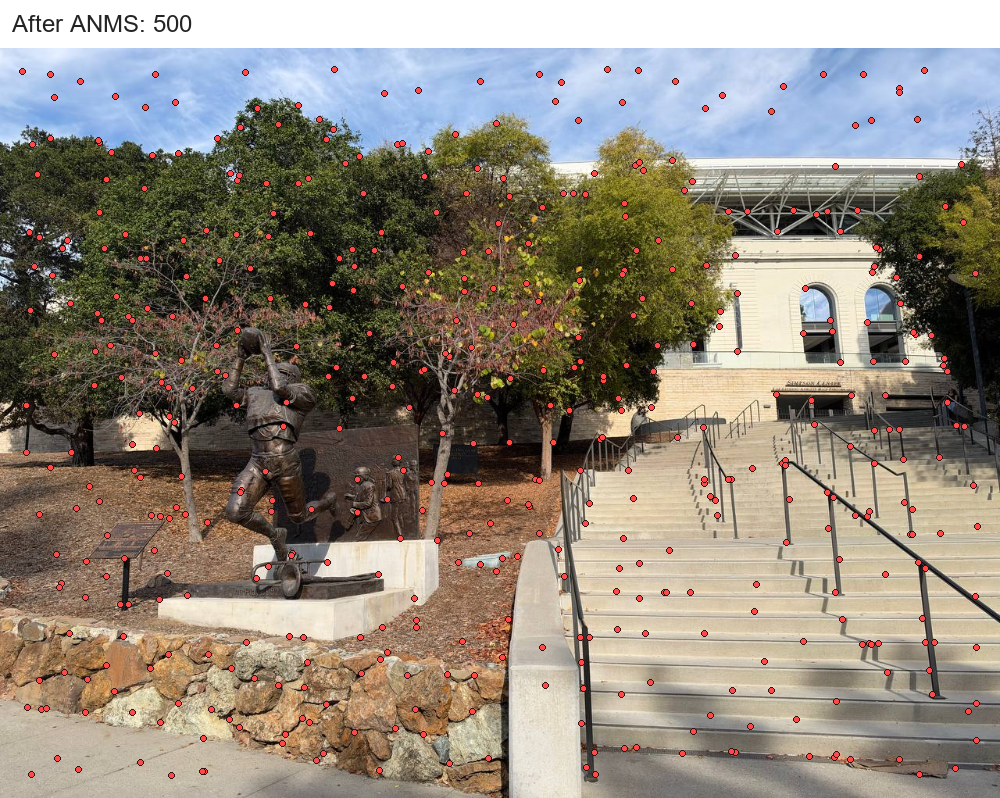
| Scene | View | Harris candidates | After ANMS | Valid descriptors |
|---|---|---|---|---|
| International House entrance | Left | 26,154 | 500 | 500 |
| International House entrance | Middle | 23,962 | 500 | 500 |
| International House entrance | Right | 25,428 | 500 | 500 |
| International House courtyard | Left | 25,222 | 500 | 500 |
| International House courtyard | Middle | 25,145 | 500 | 500 |
| International House courtyard | Right | 25,965 | 500 | 500 |
| Memorial Stadium approach | Left | 18,796 | 500 | 500 |
| Memorial Stadium approach | Middle | 18,646 | 500 | 500 |
| Memorial Stadium approach | Right | 18,101 | 500 | 500 |
The original candidate sets are dense around bricks, foliage and window frames. ANMS keeps a more distributed set of 500 points in each image, although blank walls and sky still contribute few useful corners. All 500 selected points in each of the nine views produced valid descriptors.
For each selected point, I sample a centred 40 x 40 grayscale window with explicit bilinear sampling. Its sample offsets run from -19.5 to 19.5 pixels. I blur the window with a Gaussian of sigma 2, using reflected boundaries, and take samples at indices 2, 7, 12, ..., 37 along each axis. The resulting 8 x 8 patch represents a larger region instead of only eight neighbouring source pixels.
I flatten the patch into 64 values, subtract its mean and divide by its population standard deviation:
This removes a positive multiplicative gain and additive brightness offset from the patch values. It does not provide rotation, scale or perspective invariance. Windows with incomplete support or standard deviation at most 10-8 are rejected.
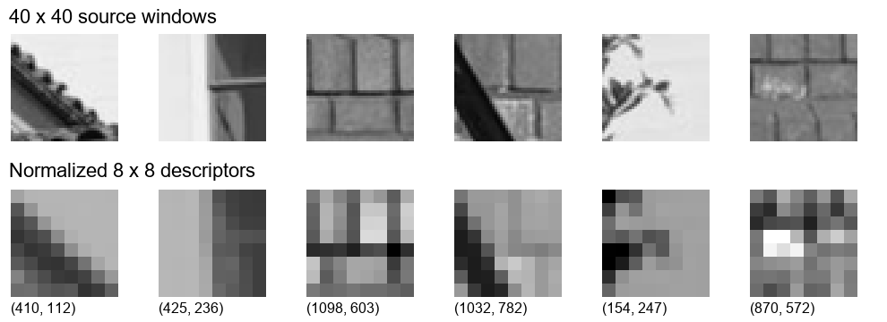
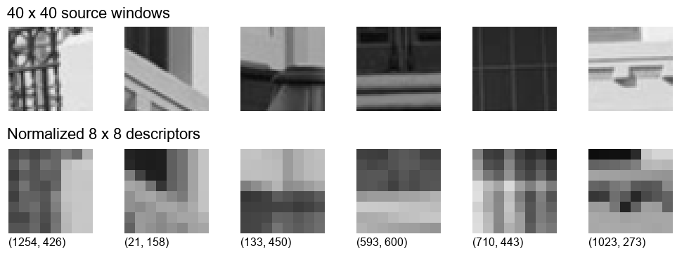
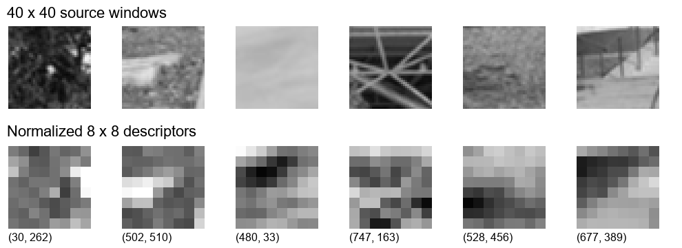
Descriptor values are displayed with a shared [-2.5, 2.5] grayscale range, clipped only for visualization. Matching uses the full normalized floating-point values.
The examples retain broad edge and corner patterns after subsampling. Fine texture becomes less distinct, which helps avoid matching individual noisy pixels, but similar windows and railings can still produce similar patches. Brightness normalization improves comparability without resolving these structural ambiguities.
I compute the sum of squared differences between every source descriptor and every descriptor in the middle image. Let SSD1 and SSD2 be its best and second-best distances. I accept a candidate when SSD1 / SSD2 < 0.5. This uses squared distances, consistent with Figure 6b of the assigned paper. A threshold of 0.5 in SSD corresponds to about 0.707 in ordinary Euclidean distance.
A second distance at or below 10-12 is treated as ambiguous and rejected. I also require mutual nearest neighbours: the target must choose the source as its own nearest descriptor. This reduces many-to-one ambiguities before geometric verification. No hand-selected matches enter this stage.
The figures show the accepted descriptor matches before RANSAC. For legibility, each displays up to 60 matches with the lowest ratios; the code evaluates and saves every accepted match.
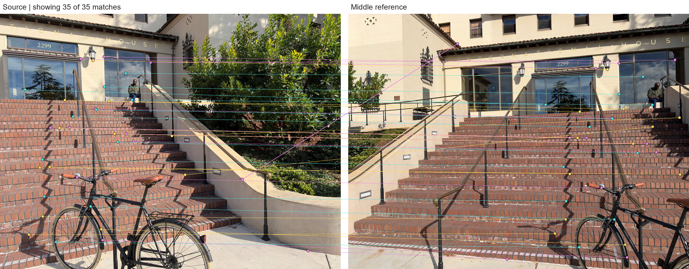
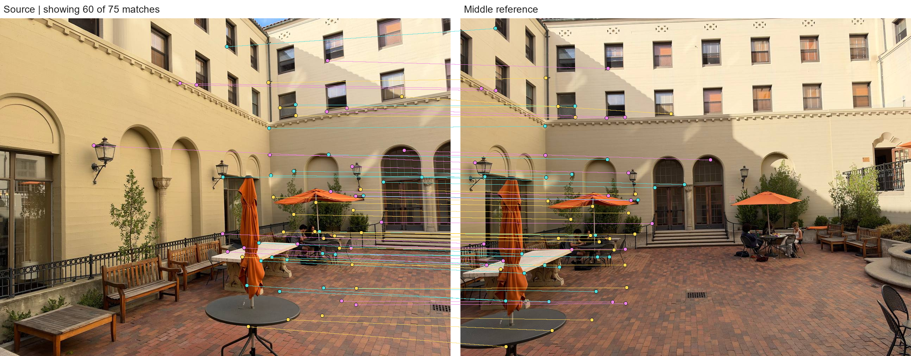
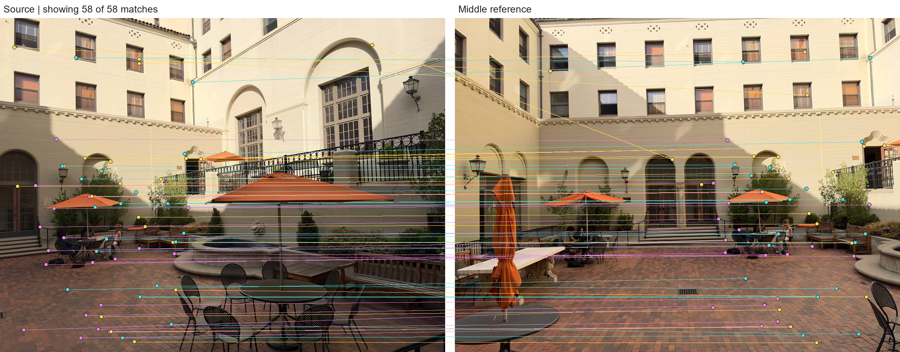
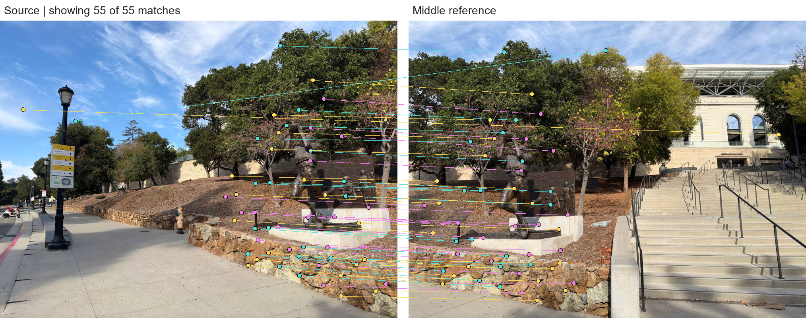
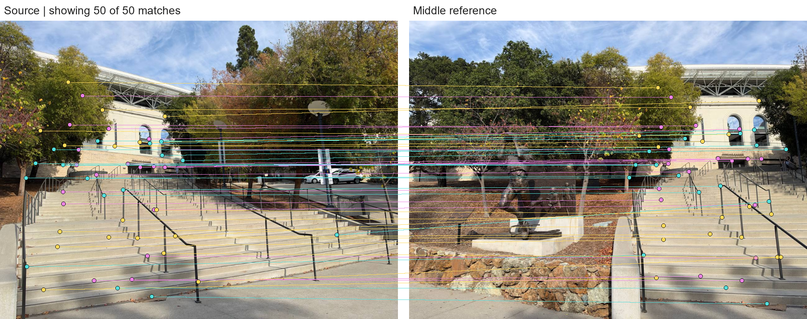
The ratio and mutual-neighbour tests leave between 35 and 75 matches per pair. Many correspondences follow the building edges, but the plots also contain crossed lines and matches between repeated structures. Descriptor similarity alone is not enough to establish a geometric transformation.
I implement four-point RANSAC directly. Each trial samples four distinct matches, rejects samples containing a nearly collinear triple in either image, and solves for H with the Part A least-squares function. I score H by the number of matches with forward reprojection error at most 3 working pixels. A median-error tie break chooses between equal-sized consensus sets.
The generator is seeded with 180 for left-to-middle pairs and 182 for right-to-middle pairs. The iteration budget adapts to the best consensus, using a confidence target of 0.999, a minimum of 64 valid hypotheses and a maximum of 10,000 draws. For n matches and k current inliers, the estimated probability of an all-inlier four-point sample without replacement is q = [k/n][(k-1)/(n-1)][(k-2)/(n-2)][(k-3)/(n-3)]. The target is ceil(log(1 - 0.999) / log(1 - q)). This estimate guides runtime; it is not a guarantee that the scene obeys one homography.
Finally, I refit H using all current inliers and reclassify matches, repeating until the set stops changing or 20 refinements are reached. The saved diagnostics record whether this converges. The automatic mosaics reuse Part A's inverse bilinear warping, shared canvas, validity masks and normalized feather weights.
| Pair | Matches | Inliers | Inlier RMS | Draws |
|---|---|---|---|---|
| International House entrance, left | 60 | 39 | 1.402 px | 64 |
| International House entrance, right | 35 | 17 | 0.820 px | 196 |
| International House courtyard, left | 75 | 45 | 1.552 px | 202 |
| International House courtyard, right | 58 | 31 | 1.517 px | 104 |
| Memorial Stadium approach, left | 55 | 41 | 1.295 px | 64 |
| Memorial Stadium approach, right | 50 | 24 | 1.369 px | 215 |
RMS is measured on the final RANSAC inliers, so it is not an independent accuracy estimate and is not directly comparable to Part A's residual on different manual landmarks.
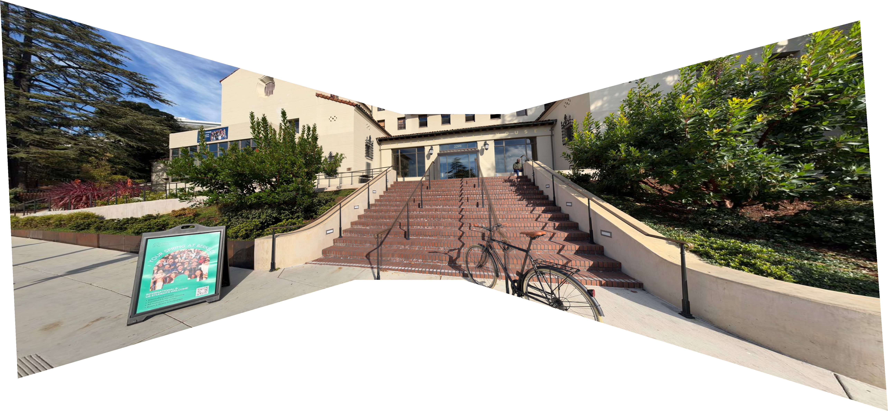
Automatic canvas: 5134 x 2381 pixels. Middle-coordinate origin: (-1841, -661).
Automatic matching improves the left stair rail and nearby wall compared with the manual fit. It does not align every depth equally: the bicycle and right rail still show double edges. The seated person also moved between photographs, so the blend retains a faint second silhouette.
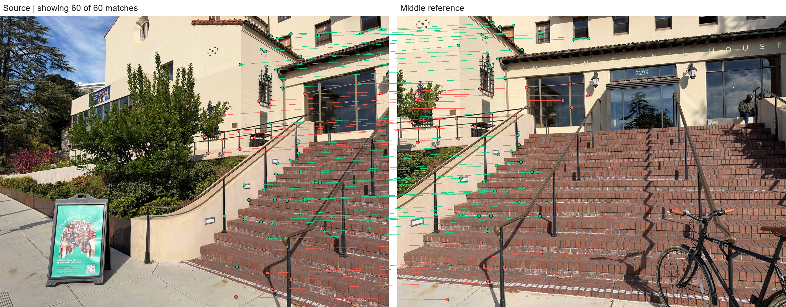
[ 2.87292 -0.0177291 -1840.67 ] [ 0.618724 2.39427 -660.009 ] [ 0.00143087 7.14055e-05 1 ]
39 / 60 inliers
Refit converged: true
H maps working source pixels to the middle image.
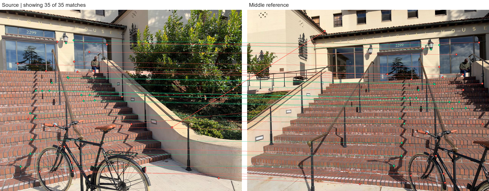
[ 0.3572 0.0133534 674.173 ] [ -0.23971 0.827766 110.055 ] [ -0.000499362 -1.44015e-05 1 ]
17 / 35 inliers
Refit converged: true
H maps working source pixels to the middle image.
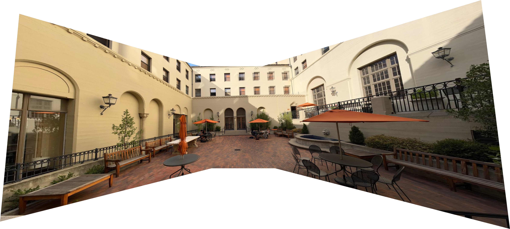
Automatic canvas: 4782 x 2154 pixels. Middle-coordinate origin: (-1556, -623).
The automatic pipeline joins the courtyard successfully, but the upper right windows and cornice are more visibly doubled than in the manual panorama. Furniture and people also retain ghost edges. A low residual on the selected inliers does not guarantee that every visible edge agrees across the overlap.
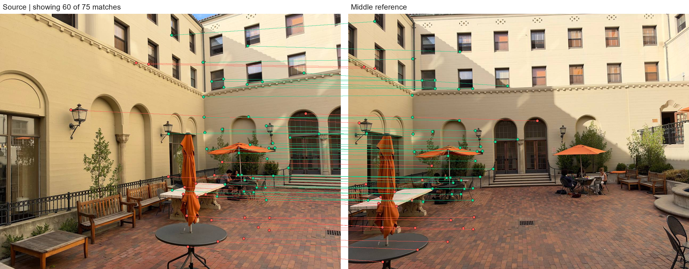
[ 2.415 -0.0886817 -1375.47 ] [ 0.594899 1.94478 -493.598 ] [ 0.00112975 -6.38513e-05 1 ]
45 / 75 inliers
Refit converged: true
H maps working source pixels to the middle image.
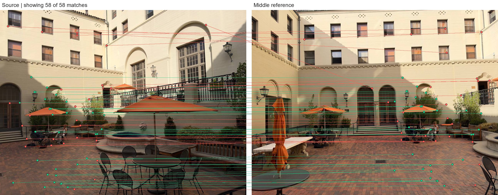
[ 0.365046 0.0399421 643.4 ] [ -0.244455 0.811857 78.8165 ] [ -0.000488068 -2.04155e-05 1 ]
31 / 58 inliers
Refit converged: true
H maps working source pixels to the middle image.
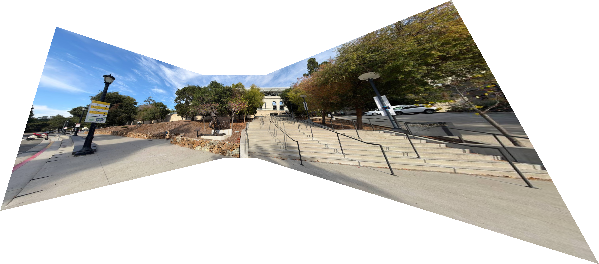
Automatic canvas: 5395 x 2383 pixels. Middle-coordinate origin: (-1653, -676).
Stadium is the weakest automatic result. RANSAC finds a consistent subset of matches, but the nearby rails and statue still produce ghosting, and the outer right view is more stretched than in the manual panorama. The scene spans several depths, and the remaining misalignment is consistent with parallax: a single homography cannot align all depths when the camera translates between views.
[ 2.37064 -0.290375 -1147.07 ] [ 0.694966 1.93428 -435.163 ] [ 0.00150535 -0.000232683 1 ]
41 / 55 inliers
Refit converged: true
H maps working source pixels to the middle image.
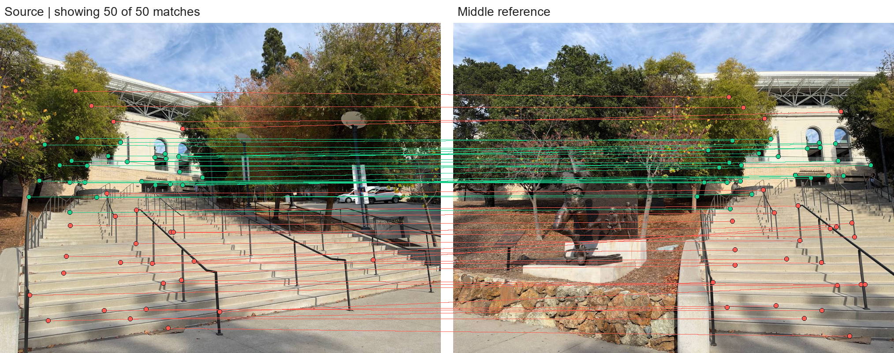
[ 0.239968 -0.069091 504.712 ] [ -0.302824 0.700101 94.0471 ] [ -0.000691979 -0.000164935 1 ]
24 / 50 inliers
Refit converged: true
H maps working source pixels to the middle image.
The main change from Part A is how the correspondences are chosen. ANMS distributes the corners, normalized patches describe their surroundings, the ratio test filters ambiguous candidates, and RANSAC selects matches that agree with a common transformation. The same warping and blending code then produces the panorama.
Automatic matching removes the need to label landmarks, but it does not necessarily produce a cleaner image. The entrance improves locally, while the courtyard and stadium expose cases where the manual fit looks better. A small inlier residual measures agreement within the selected set, not the quality of the whole panorama.
The rejected matches include descriptor mistakes and may also include real correspondences at depths that disagree with the selected homography. Feathering softens intensity seams, but it cannot repair these geometric differences or motion between photographs. Keeping the camera centre fixed during capture and avoiding moving subjects would reduce these problems.
The Harris settings come from the supplied starter. ANMS and patch matching follow the assigned Brown, Szeliski and Winder paper with the course's single-scale, axis-aligned simplifications. The implementation contains no library feature descriptor, matcher, RANSAC or homography-estimation call.